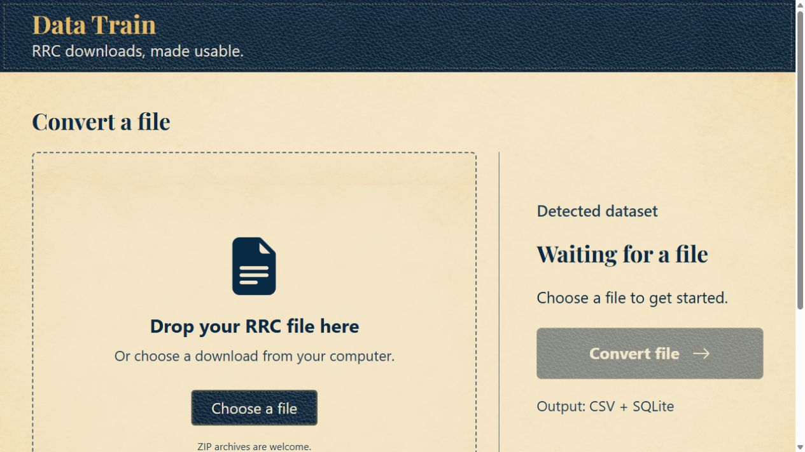

1. Start the app
- Right-click the Data Train ZIP you downloaded, choose Extract All, and select Extract.
- Open the extracted Data Train folder and double-click Data Train.exe.
- Your browser opens the app. Keep the whole extracted folder together, including the
_internalfolder.
You do not need to install Python or Node. Run Data Train.exe from the extracted folder, not from inside the ZIP.
2. Choose an RRC download
- Get a file from the Texas Railroad Commission download page. You can leave the RRC file zipped.
- Drop the RRC file in the box, or select Choose a file and find it on your computer.
- Check the detected dataset. If asked to choose, select the name shown on the RRC download page.
- Select Convert file. Large files can take a while and need free disk space.

3. Open your results
When conversion finishes, select Download results. Find the results ZIP in your browser's Downloads and extract it. Data files generally produce CSV tables and a SQLite database. Some RRC downloads produce several tables.
If you open a CSV in a spreadsheet, import identifier columns as text so leading zeros remain visible.
When finished, select Quit app at the bottom of Data Train. Closing the browser tab alone leaves the app running; double-click Data Train.exe again to reopen it.
If you need help
- The app won't start: Extract the complete Data Train ZIP again and keep the entire folder together.
- The file isn't identified: Choose the dataset named on the RRC page. Make sure you downloaded the data file, not a saved webpage.
- Where did my results go? Your browser saves the results ZIP in its Downloads folder. Data Train also keeps a local copy under
%LOCALAPPDATA%\Texas RRC Data Converter\Results.
Images and PDFs are organized as files; their text is not extracted. Oracle export dumps need to be imported and exported as text before conversion. GIS shapefiles are not converted.